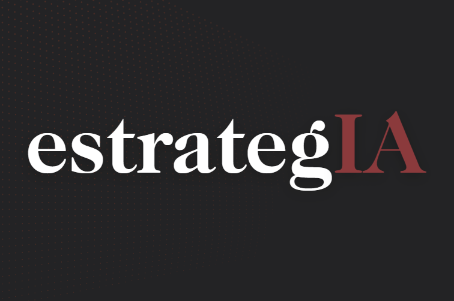

Aplicación cívica y filosófica
App estoica
Un proyecto propio que explora cómo la IA puede acompañar la práctica diaria del estoicismo, con una mirada serena sobre tecnología, vida pública y cultivo personal.

SuscribirseNewsletter pionera en español sobre IA, política y gobierno
Inteligencia artificial para entender el nuevo poder político, institucional y administrativo.
Impulsada por ALEPH
estrategIA es una newsletter pionera en español sobre la intersección entre inteligencia artificial, política, gobierno, comunicación pública y liderazgo institucional. Está creada y dirigida por Fernando Nieto Lobato y editada por Pablo Martín Diez. Está impulsada por la Institución Educativa ALEPH.
Nace con una convicción sencilla: la inteligencia artificial no es solo una cuestión tecnológica. Es ya una cuestión política, institucional, económica, cultural y democrática.
Por qué GitHub
Substack es el lugar para leer la newsletter y la web de ALEPH reúne la ficha institucional, los prompts, las herramientas y las buenas prácticas. Esta página tiene otra función: recoger los repositorios y prototipos nacidos o comentados en estrategIA, para que la parte práctica del proyecto pueda consultarse, probarse y reutilizarse de forma abierta. Algunos de estos proyectos se presentaron en estrategIA #128.
Aplicación cívica y filosófica
Un proyecto propio que explora cómo la IA puede acompañar la práctica diaria del estoicismo, con una mirada serena sobre tecnología, vida pública y cultivo personal.
Análisis político con Codex
Prototipo creado con Codex para analizar discursos políticos, identificar marcos argumentales y convertir el análisis textual en una herramienta práctica para comunicación institucional.
Enfoque
Cada semana, desde octubre de 2023, estrategIA analiza cómo la IA está transformando la toma de decisiones públicas, la comunicación política, las campañas electorales, la administración, la regulación, la seguridad, la educación, el trabajo y la forma en que las sociedades imaginan su futuro. Lejos tanto del entusiasmo acrítico como del alarmismo superficial.
Señales relevantes sobre IA, poder, instituciones, opinión pública y transformación administrativa.
Consecuencias políticas, democráticas, organizativas y culturales de una tecnología que ya condiciona decisiones públicas.
Capacidades, criterios, herramientas y riesgos para gobiernos, administraciones, equipos de comunicación y consultores.
Casos de uso, prototipos, prompts, lecturas y recursos para experimentar con la IA de forma responsable y estratégica.
Canales y recursos
Además de la publicación semanal, ALEPH mantiene páginas de apoyo con herramientas, buenas prácticas y prompts que amplían el valor práctico de la newsletter.
Qué encontrarás
Regulación, estrategias nacionales, usos de IA en administraciones públicas, automatización, datos, transparencia, riesgos democráticos y oportunidades para mejorar la acción de gobierno.
Impacto de la IA generativa en la comunicación pública, la propaganda, la segmentación, la creación de contenidos, la consultoría política, la reputación institucional y la relación entre ciudadanía y poder.
Aplicaciones útiles, estudios de caso, informes relevantes, prompts y recursos pensados para responsables públicos, consultores, docentes y equipos profesionales.
Propósito
En el marco de ALEPH, estrategIA quiere ayudar a comprender uno de los grandes desafíos de nuestro tiempo: cómo incorporar la inteligencia artificial a la política y al gobierno sin renunciar al criterio, la deliberación, la responsabilidad pública y el sentido humano de la tecnología. La IA no va a sustituir la necesidad de liderazgo. Al contrario: va a exigir mejores líderes, mejores instituciones y una comprensión más profunda de los cambios que ya están transformando nuestras sociedades.
Quiénes somos
estrategIA es una iniciativa creada y dirigida por Fernando Nieto Lobato, director de Innovación Digital de la Institución Educativa ALEPH y consultor estratégico especializado en inteligencia artificial aplicada a la política, el gobierno y la comunicación pública.
El proyecto cuenta con Pablo Martín Diez como editor y con Sofía García Morales en la revisión y corrección editorial.
Para patrocinar o colaborar con estrategIA, la newsletter pionera en español sobre IA, política y gobierno, puede escribirse a su editor, Pablo Martín, en pablomartin@institucioneducativaaleph.com.
Suscripción
Una lectura periódica para seguir la evolución de la IA desde el ángulo que importa a gobiernos, administraciones, comunicadores y actores institucionales.